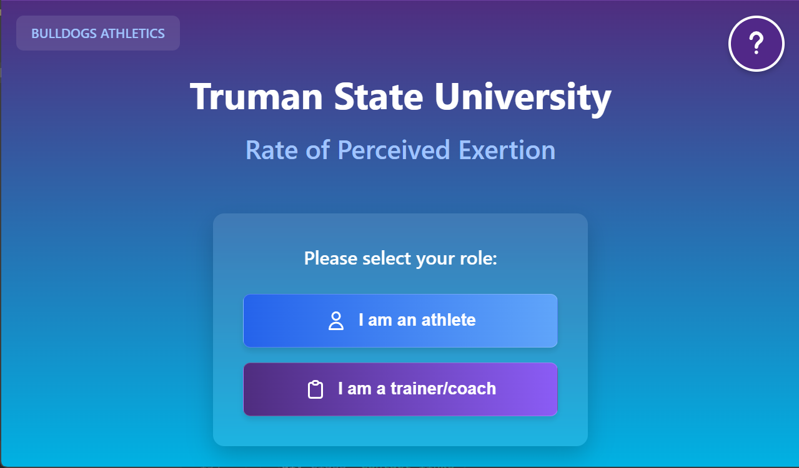
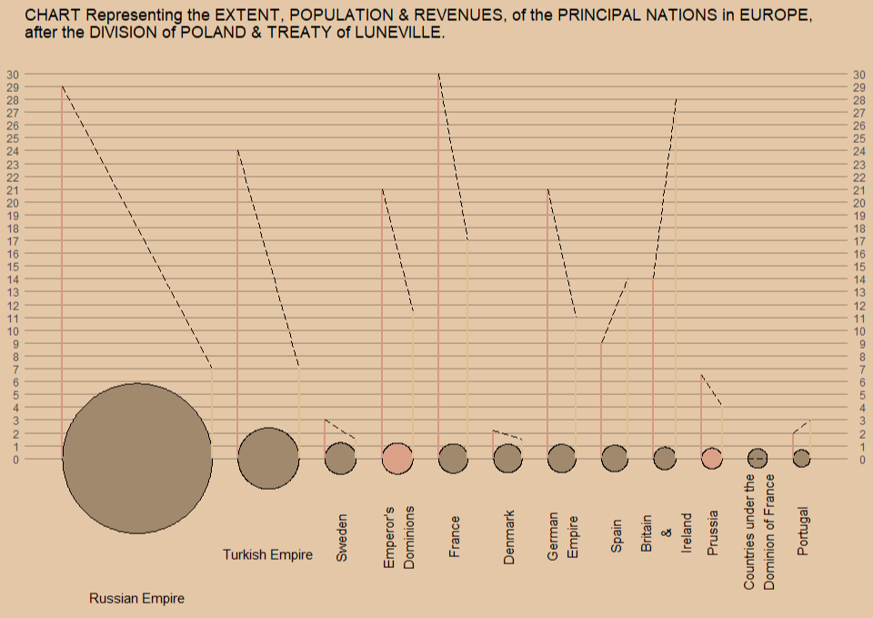
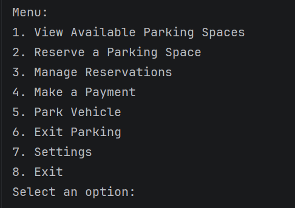
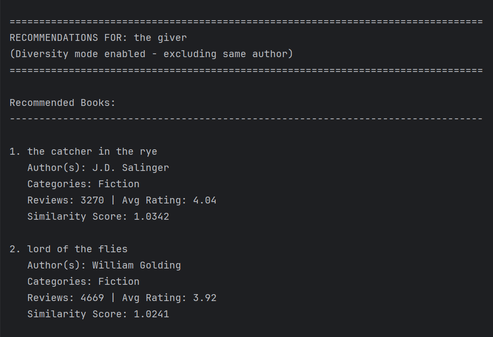
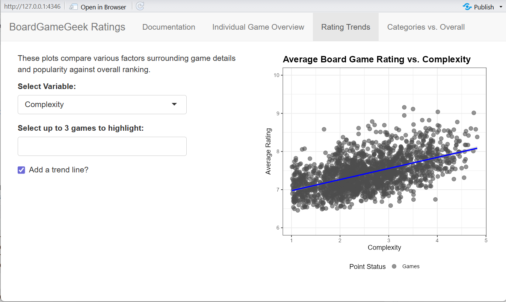
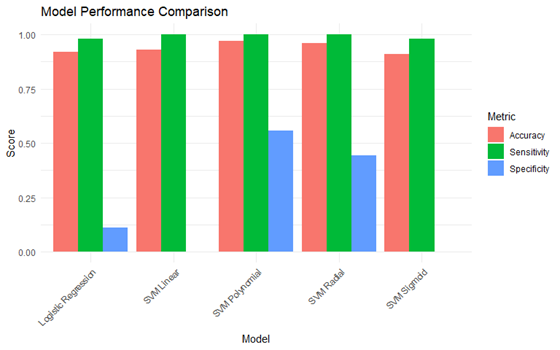

Completed Projects
RPE Tracking Application
Role: Frontend Engineer & UI/UX Designer
Tech Stack: React.js, Flask, Pandas
Overview: Designed and implemented a full-stack web app enabling athletes to submit Rate of Perceived Exertion (RPE) scores for coaches and athletic directors to visualize and track.
- Developed the main page, athlete submission form, and daily report view using React.
- Implemented Flask routes to handle form submissions and store responses in a CSV file.
- Ensured consistent styling through a centralized CSS structure for maintainability.
- Collaborated with teammates responsible for visualization components and extended Flask logic.
Links: GitHub

Playfair Recreation
Tech Stack: R, ggplot2, ggforce
Overview: Recreated and analyzed William Playfair’s historical economic visualizations to explore relationships between taxation and population.
- Used R, ggplot2, and ggforce to replicate Playfair’s color and line techniques.
- Discussed how design choices impact visual interpretation.
Links: GitHub

Parking Lot Simulation
Tech Stack: Java, Object-Oriented Programming, Collections Framework
Overview: A console-based simulation that manages parking spaces, vehicle reservations, and payments in a dynamic parking lot system.
- Implemented the main program logic for user interaction through a menu-driven interface.
- Developed features for viewing and reserving parking spaces, managing reservations, handling payments, and tracking vehicle entry/exit.
- Applied object-oriented principles with classes for
ParkingLot,Vehicle,Reservation, andParkingSpace. - Integrated time-based calculations using
LocalDateTimeandDurationto compute parking fees.
Links: GitHub

Book Review Analysis & Recommendation System
Role: Data Scientist & NLP Engineer
Tech Stack: Python, MySQL, Scikit-learn, Pandas, SQLAlchemy
Overview: Built a book recommendation system that combines structured SQL data with unstructured review text to generate similarity-based book recommendations.
- Cleaned and processed review text in Python to build consolidated text profiles for each book.
- Applied TF-IDF vectorization and cosine similarity to measure textual similarity between books.
- Implemented filtering and scoring logic to exclude low-quality results, remove same-author titles, and boost recommendations from matching genres.
- Cached processed book profiles to significantly reduce runtime on subsequent executions.
Links: GitHub

BoardGameGeek Ratings Exploration App
Role: Data Analyst & Shiny Developer
Tech Stack: R, Shiny, ggplot2, tidyverse
Overview: Developed an interactive Shiny application to explore how board game characteristics relate to user ratings on BoardGameGeek using visual analytics.
- Authored comprehensive in-app documentation explaining the dataset, analytical motivation, methodology, and conclusions.
- Designed and implemented the Rating Trends tab, enabling users to compare average ratings against multiple game attributes.
- Built dynamic scatterplots and boxplots that automatically adapt based on variable type (continuous vs. discrete).
- Added advanced interactivity including game highlighting, optional trend lines, and log-scale transformations.
- Collaborated on data preparation and visualization logic to ensure clarity, statistical validity, and usability.
Links: GitHub

Predicting Smoking Behavior Using PCA and Support Vector Machines
Tech Stack: R, caret, e1071, ggplot2
Overview: Developed and compared machine learning models to predict social smoking behavior among employees using workplace absenteeism data. Implemented dimensionality reduction with PCA and classification using multiple SVM kernels to optimize prediction performance.
- Performed exploratory data analysis to understand class imbalance and feature distributions.
- Applied PCA to reduce dimensionality while retaining 91.9% of variance across 13 components.
- Built and evaluated logistic regression and multiple SVM models (linear, sigmoid, radial, polynomial).
- Achieved highest accuracy (96.9%) and improved specificity (55.6%) using polynomial SVM.
- Visualized model performance and comparative metrics with ggplot2 for clarity and reporting.
Links: GitHub
